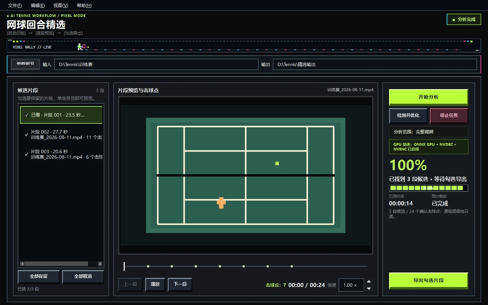
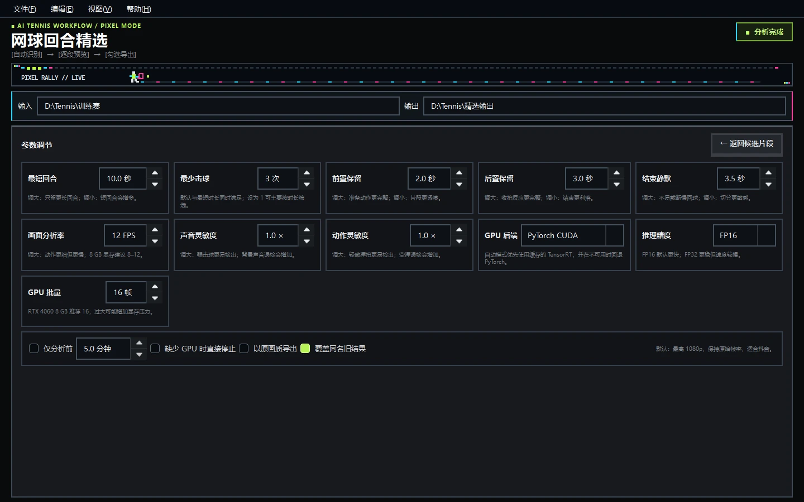

音画融合声音 + 骨架 + 球拍
READY TO INSTALL WINDOWS 10 / 11
把长视频里的
精彩回合挑出来
声音找到候选，人体骨架确认挥拍，球拍检测过滤走路和摆臂。分析完成后，在软件里逐段预览、查看击球点，再勾选导出。
v0.1.0156.2 MiB内置运行环境、模型与 FFmpeg，无需另装 Python。
当前安装包位于私有 GitHub Release；请先登录拥有仓库权限的 GitHub 账户。公开下载镜像正在规划中。

人工复核逐段播放与击球跳转
GPU 加速NVDEC / CUDA / NVENC
源视频只读验证成功后再发布结果
WHY IT EXISTS 少翻进度条，多看真正的回合
训练视频很长，值得保留的回合却很分散。
Tennis Video Helper 把“自动发现”和“人工决定”分开：模型负责找候选，人负责最后确认。它不会替你删除源视频，也不会把一次声音或一次摆臂直接当成完整回合。
CORE LOOP 从整段素材到精选片段
四步完成一次网球视频精选
AUDIO
先听见可能的击球
音频瞬态快速扫描整段视频，只负责提出候选时间窗。脚步声、邻场击球和孤立噪声不能独立开始或延长回合。
VISION
再确认挥拍和球拍
近端球员的手腕、肘部和躯干轨迹共同判断挥拍；球拍检测进一步排除走路持拍、普通摆臂和靠近镜头的无关动作。
REVIEW
在时间线上逐点击球复核
每个候选片段都能直接播放；绿色方块显示模型确认的击球点，点击时间线即可跳转，0.25× 至 4.00× 倍速自由检查。
EXPORT
只导出你勾选的片段
默认最高 1080p 并保留原始帧率关系，也可以选择原画质。覆盖同名旧结果时，会先完整生成并验证新结果，成功后再替换。
TUNE YOUR MATCH 普通用户也能看懂的设置
保留更长回合，还是寻找更多短回合，由你决定。
参数页把识别、性能和导出设置放在同一个像素工作台中，每项都说明“调大”和“调小”会发生什么。
- 最短回合
- 默认 10 秒
- 最少击球
- 默认 3 次
- 前置 / 后置保留
- 2 秒 / 3 秒
- 声音 / 动作灵敏度
- 分别调节召回与误检
- GPU 后端
- 自动、ONNX、TensorRT、PyTorch CUDA
- 输出策略
- 1080p、原画质、覆盖同名旧结果

DEV LOG 研发进度
v0.1.0 已发布，识别与性能仍在持续验证
进度按“已经验证”“当前发布”“下一步计划”区分；性能数字来自固定真实素材回归，不把一次偶然结果写成承诺。
- 2026.07多模态识别基线
完成声音候选、近端骨架动作、球拍确认、回合状态机、NVENC 导出和报告结构。
- 2026.08复核工作台与安全覆盖
加入候选片段播放、击球时间线、倍速、勾选导出；新结果验证成功后才替换旧目录。
- v0.1.0首个 Windows 安装版
像素风桌面界面、轻量 ONNX 安装路径和精简 FFmpeg 已打包；安装包约 156.2 MiB。
- REAL VIDEO声音聚焦性能回归
120 秒素材从 13.35 秒降至 5.23 秒，8/8 击球保留；另一段素材保持 13/13 击球。
- NEXT公开下载与发行可信度
规划公开安装包镜像、代码签名、更多球场与机位回归；NPU 仅在端到端净收益达到门槛后考虑加入。
INSTALL STATION WINDOWS x64
下载，校验，安装。三步开始筛选。
当前安装包没有数字签名，Windows SmartScreen 可能显示未知发布者。只从本页固定版本链接下载，并在安装前核对 SHA-256。
- 01下载安装包
文件名应为
TennisVideoHelper-Setup-0.1.0.exe，大小约 156.2 MiB。 - 02核对 SHA-256
PowerShell 运行
Get-FileHash .\TennisVideoHelper-Setup-0.1.0.exe。 - 03完成安装
确认哈希一致后双击安装；若 SmartScreen 出现提示，选择“更多信息”查看文件名后再决定运行。
SHA256 / v0.1.01D5101A6F1341D1AF6BAEC17A15FBBB68A94895EB0E1F2ABEF40FAD85D255B37
用于确认下载文件与发布资产完全一致。
FAQ 安装与使用边界
开始之前，先确认这几件事
安装版还需要 Python 或 FFmpeg 吗？
不需要。安装包已经内置应用运行环境、模型以及程序使用的 FFmpeg 与 ffprobe。
一定要 NVIDIA 显卡吗？
轻量安装版可以使用 ONNX GPU 路径；NVIDIA 显卡还能启用 NVDEC / NVENC，并在支持的环境中使用 CUDA 或 TensorRT。不可用时软件会明确显示回退状态。
程序会删除我的原视频吗？
不会。源视频始终只读；软件只向你选择的输出目录写入候选和最终片段。
为什么下载安装包时显示 404？
当前 Release 位于私有源码仓库。请确认已登录拥有该仓库权限的 GitHub 账户；公开下载镜像尚未发布。